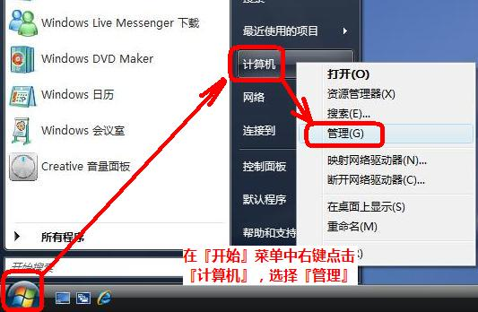
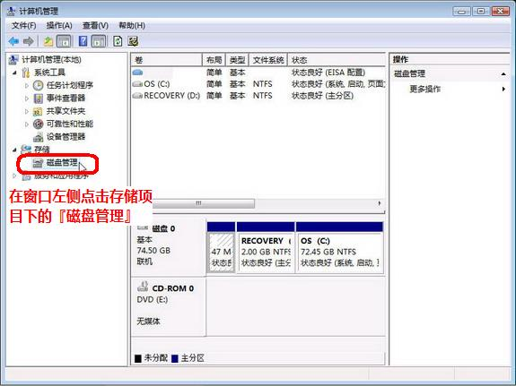
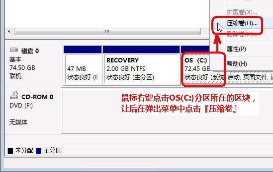
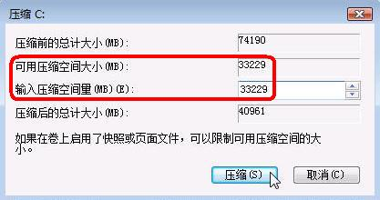
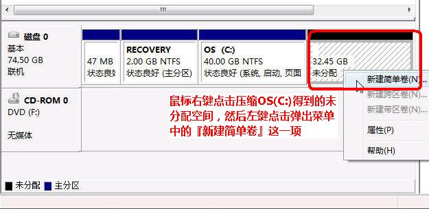
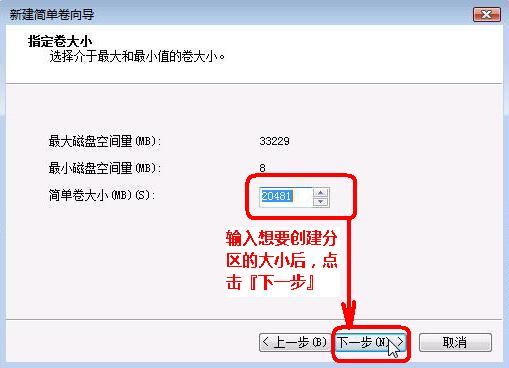
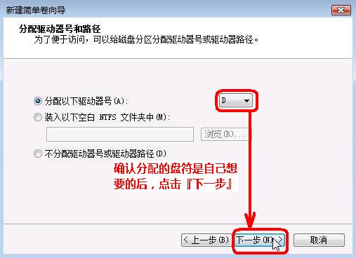
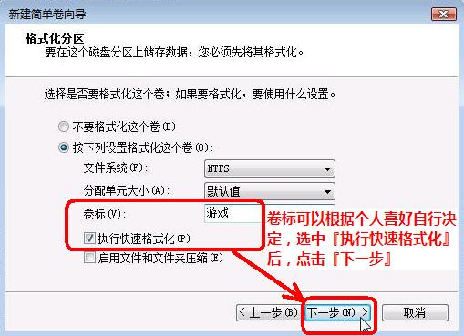
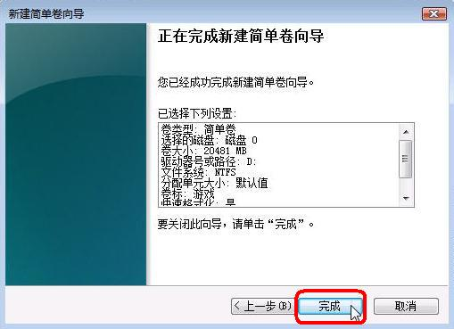
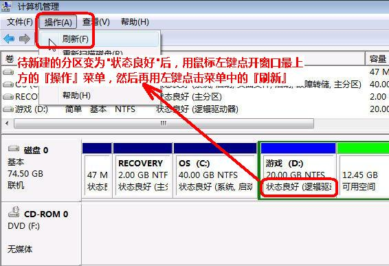

在使用电脑时，有时会感觉当前硬盘分区不合理，例如以前使用XP系统，只需10G左右的磁盘空间就够了，而后安装Vista或者windows 7，则需要20G左右的空间，如果C盘过小，则会影响windows 7和Vista的正常运行，诸如分区魔法师（PQ）的软件不能与Vista/windows 7兼容，我们完全可以使用Vista/windows 7自带的分区工具，实现无损数据而对磁盘重新分区！下面虾虾就为朋友们介绍详细的分区方法（在Vista系统下操作，在windows 7下完全适用）
以下只是一个例子，我们在例子中将会看到如何释放C盘的空间并从释放的空间来创建两个新分区。为了让最终的三个硬盘分区使用连续的C、D、E的盘符，例子中还会介绍如何在磁盘管理中修改盘符。希望朋友们举一反三，顺利实现磁盘分区。
在分区中谨记不要关闭计算机！
【一】启动磁盘管理
１、在开始菜单中，右键点击『计算机』，在弹出的菜单中点击『管理』。

２、在打开的计算机管理窗口的左侧，鼠标左键单击选中『磁盘管理』。

【二】缩小Vista系统分区C:，释放硬盘空间以创建新分区
８、右键点击OS(C:)所在的方块区域，并在弹出菜单中左键单击『压缩卷』。

等待系统完成查询可用压缩空间。
９、输入准备想要释放出的硬盘空间的大小后，点击『压缩』。

★Vista磁盘管理压缩卷功能有以下几点限制：
1、只能释放硬盘分区后部的空间。
2、因为NTFS分区中部存在MFT保留区域，所以最大只能释放出一个分区不到一半的容量。
3、和分区魔术师等软件不同，这里能够设置的是想要释放出的硬盘空间。
【三】创建新分区
１０、鼠标右键点击前面操作得到的未分配空间，在弹出菜单中左键单击『新建简单卷』。

１１、出现新建简单卷向导界面后，点击『下一步』。
１２、根据需要输入想要创建分区的大小，点击『下一步』。

１３、然后继续点击『下一步』。

１４、根据需要设置卷标并选中『执行快速格式化』，再点击『下一步』。

１５、点击『完成』。

１６、待新建分区的状态变为『状态良好』之后，『刷新』一下以防止后面出现一些奇怪的问题。
★切记每创建一个新分区之后，都要在『操作』菜单中进行一次『刷新』的操作。

１７、重复前面的操作，根据需要继续创建分区。
１８、全部完成后关闭计算机管理的窗口即可。
在以上步骤中，如果存在可有空间，我们可以也将鼠标放在其他磁盘上，鼠标右键，选择扩展卷，来增加磁盘空间！（当然扩展空间的大小不能超过可用空间的大小）